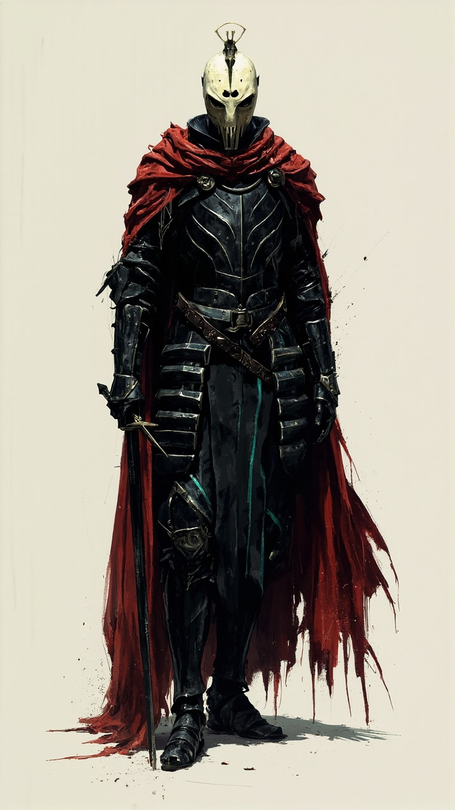
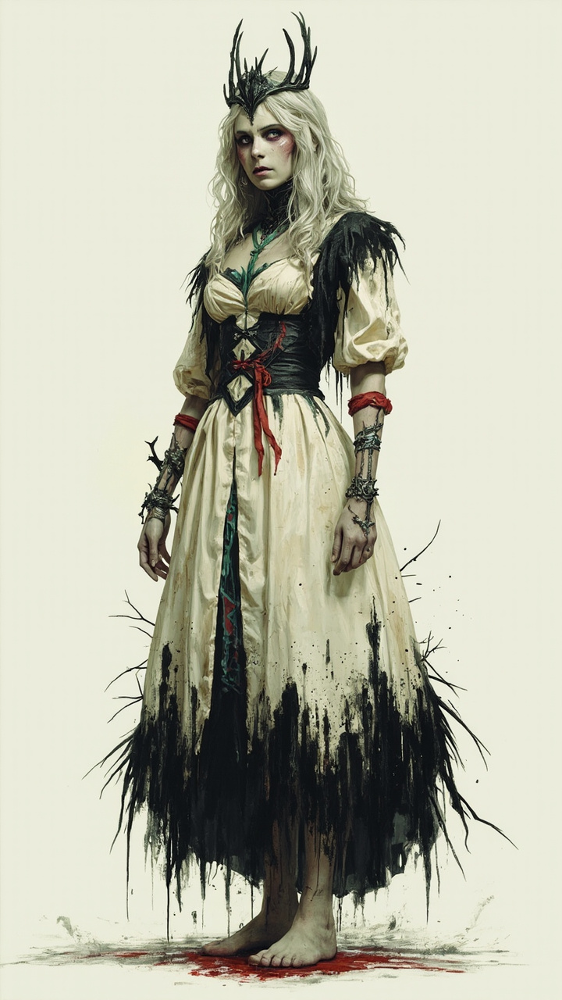
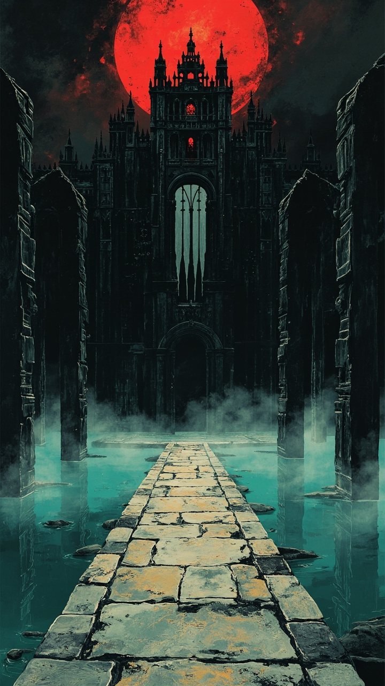
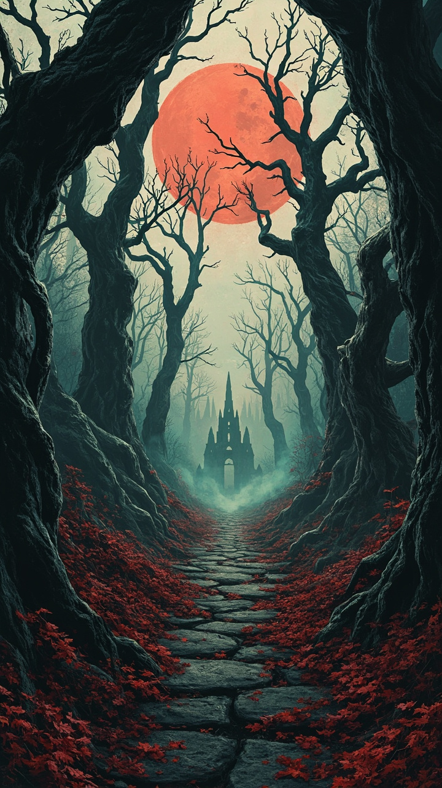
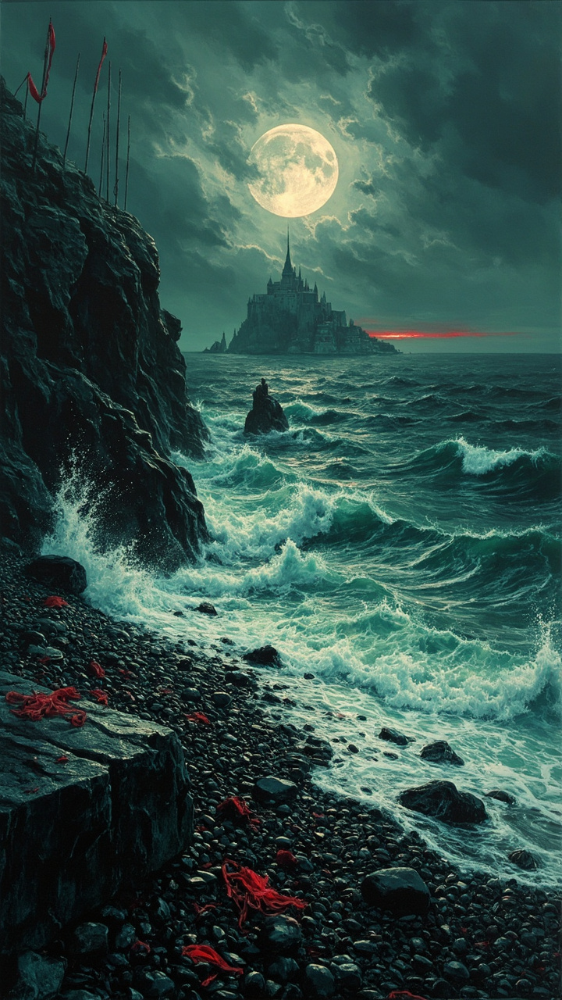

English
The Oath of Cinders · 2:11 · 9:16
Ritmo detectado en esta canción
Un caballero atraviesa reinos muertos para liberar a su princesa. La puerta exige una vida. Él paga el precio.
Dos canciones originales y dos montajes: folk sombrío, sintetizadores oscuros, agua y niebla en movimiento. Las runas y las brasas responden al ritmo de cada interpretación.
The Oath of Cinders · 2:11 · 9:16
El juramento de ceniza · 1:39 · 9:16
Personajes sin fondo, un primer plano de espinos y tres escenarios animados. Cada plano sigue siendo editable en Vídeo 3D; la composición reutiliza la plantilla del caballero por capas.





Los tiempos de proceso proceden de los recibos de HocusPocus. El total incluye preparación, esperas y revisión; no es una estimación para otro equipo.
| Etapa | Trabajo | Tiempo de proceso |
|---|---|---|
| Cargando el registro de producción… | ||
Imágenes: MiniMax Image-01 desde Story Lab. Canciones: YuE2 desde HocusPocus. Movimiento: H3 Fused de cuatro pasos e interpolación RIFE. Recorte: quitar fondo de imagen y vídeo. Montaje por capas: Vídeo 3D. Ensamblado y recorte del inicio musical: Video Editor.
Los movimientos del caballero y la princesa mantienen su velocidad natural. Las trayectorias de las brasas, los pulsos de las runas y los cortes usan los beats medidos de cada audio. No se ha generado un vídeo completo con un modelo ni se ha montado con un renderizador externo.
Los subtítulos son opcionales y se basan en la letra escrita alineada por el análisis de HocusPocus; alguna pronunciación cantada puede diferir. Los WAV conservan la toma completa, incluida la introducción que se ha acortado en los vídeos.
{kind=link}
{kind=link}
{kind=link}
{kind=link}
{kind=link}